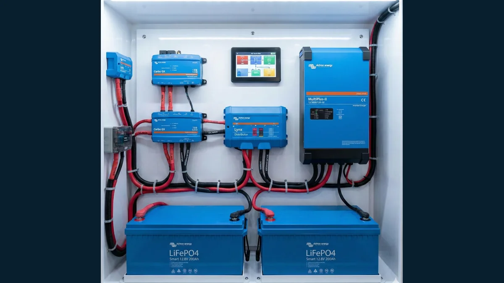
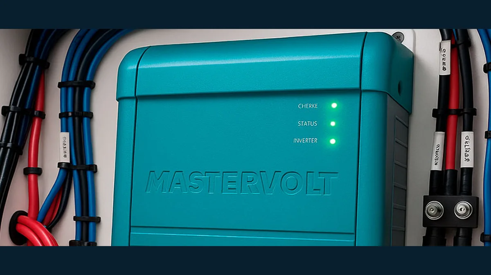

Inverters & Chargers
Inverter/chargers, converters and onboard power configurations.
ADVANCED ONBOARD TECHNOLOGY
Independent diagnostics, troubleshooting, installation, configuration and integration for today's interconnected marine electrical and electronic equipment.
SYSTEMS & EQUIPMENT
Our work considers how devices communicate, receive power and interact with the onboard infrastructure around them.
Inverter/chargers, converters and onboard power configurations.
Battery banks, charging equipment, monitoring and energy management.
Solar integration, charge controllers and related DC equipment.
Distribution panels, protection, connections and system coordination.
Energy displays, system monitoring and electronic control interfaces.
Embedded electronics, navigation-system interfaces and interconnected equipment.
TROUBLESHOOTING SPECIALIST
Many onboard issues involve multiple devices, connections or settings. Our troubleshooting-first approach focuses on measurements, circuit tracing, configuration review and understanding the wider system before deciding on repairs or replacement.
DISCUSS A SYSTEM ISSUEMARINE EQUIPMENT EXAMPLES
Examples of equipment in modern marine systems include solutions from Victron Energy and Mastervolt. Our services are not limited to these manufacturers.


Equipment selection and service scope depend on the vessel, existing systems and project requirements.
DAROCHA SYSTEMS is an independent service provider and does not claim manufacturer authorization or certification.
Equipment imagery was supplied for the website. These photographs are not presented as completed DAROCHA SYSTEMS client projects.
DISCUSS YOUR PROJECT →LET'S TALK ABOUT YOUR VESSEL
Share your equipment details or symptoms to discuss the next steps.